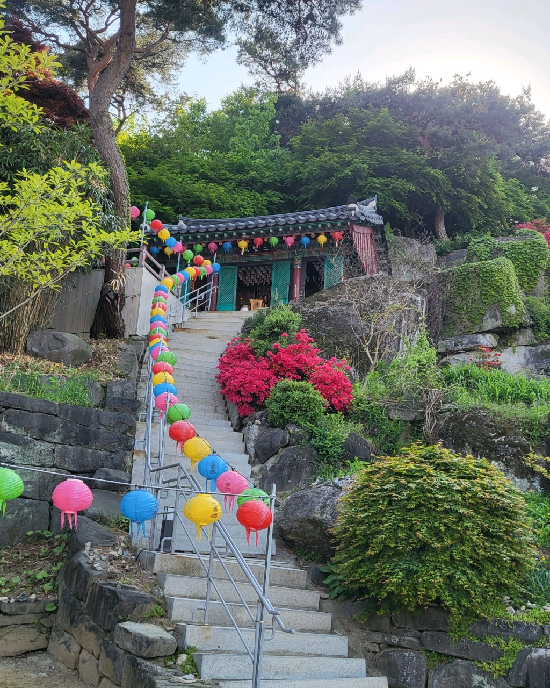

HealingSpace
충남 논산시 양촌면 반곡리


1 / 3
숙소 특징
조용한 시골 마을
민가가 없어 자유로운 대화나 음악 감상이 가능합니다.
가족 단위 또는 대학 MT에 적합
넓은 공간과 편의 시설로 단체 숙박에 최적입니다.
예전 주거용 주택 (실내 완비)
옛 정취가 느껴지는 아늑한 실내 공간이 완비되어 있습니다.
넓은 평상 (BBQ 가능) & 테라스
야외 활동을 즐길 수 있는 넓은 평상과 테라스가 마련되어 있습니다.
앞마당에서 농촌 체험 가능
자연 속에서 특별한 농촌 체험을 경험해 보세요.
넓은 주차 공간
차량 3~4대까지 넉넉하게 주차 가능합니다.
주변 관광지
탑정호 출렁다리
동양 최대의 출렁다리에서 아름다운 호수 경관을 감상하세요.
군사박물관
한국의 군사 역사를 한눈에 볼 수 있는 교육적인 장소입니다.

관촉사
은진미륵으로 유명한 천년 고찰에서 평온함을 느껴보세요.
참고 정보
HealingSpace는 논산훈련소에서 차량으로 약 30분 거리에 위치해 있어, 입영 전날 부모님과 함께 조용히 머물 수 있는 숙소로도 적합합니다.
시끄럽지 않고 편안한 분위기 속에서 마지막 하루를 보내고 싶은 가족에게 추천드립니다.